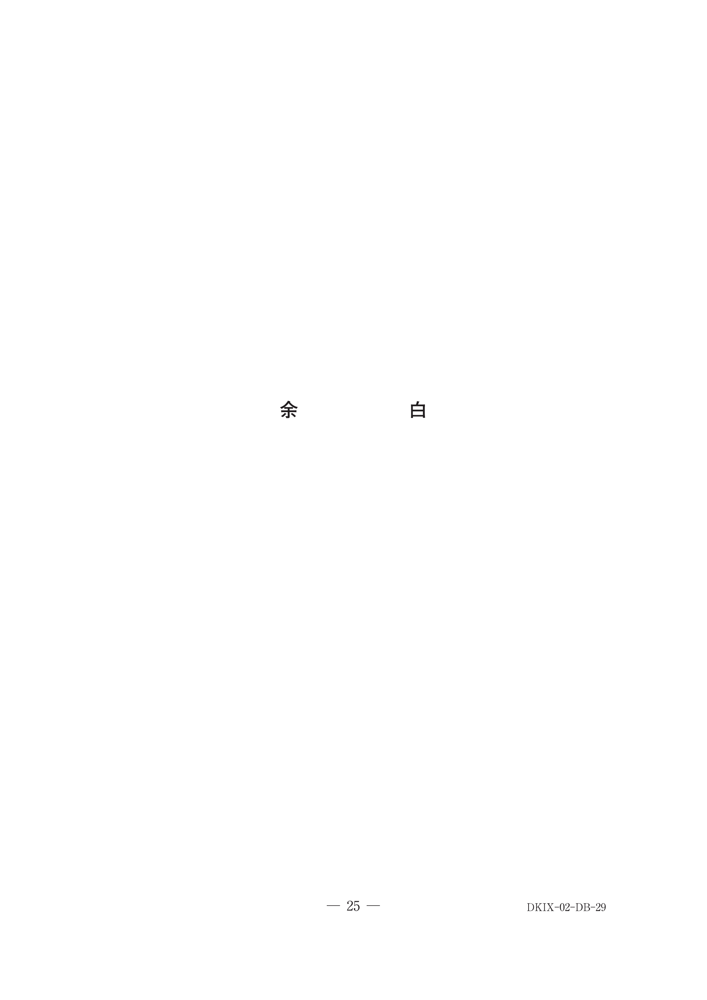
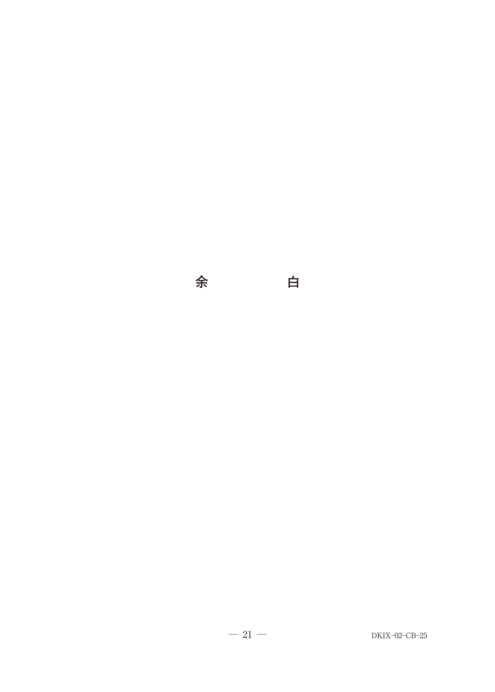

偶発症
偶発症の分類
根管治療中に起こりうる偶発症には、レッジ、穿孔、ジップ、器具破折などがある。
根尖部における不適切な根管形成
| 偶発症 | 特徴 |
|---|---|
| レッジ | 根管壁に段差（棚状の構造）が形成される |
| 穿孔 | 根管壁を貫通して歯根膜腔に達する |
| ジップ | 根尖孔が涙滴状に変形する |
| 器具破折 | ファイル・リーマーが根管内で破折して残留 |
レッジ ★★
レッジの原因
- 30号以上のステンレススチール製器具（剛性が高い）
- 過剰あるいは強圧下でのリーミング操作
- 削片の貯留：目詰まりした部位を起点に直線化
レッジの予防・修正法
- 根管口部のフレア形成を適切に行う
- プレカーブを付与した器具で形成
- 過剰なリーミングを避け、ファイリング主体で形成
- Ni-Tiロータリーファイルなど柔軟な器具を使用
- EDTA液の使用（根管壁の軟化）
※リーミングによる再根管形成は逆効果（レッジを悪化させる）
根管拡大中に形成したレッジの修正で効果的なのはどれか。2つ選べ。
b 根管口部のフレア形成
c リーミングによる再根管形成
d ニッケルチタンファイルの使用
e ファイルへのプレカーブの付与
【解説】レッジ修正には、根管口部のフレア形成とプレカーブ付与が有効。リーミング（回転操作）はレッジを悪化させるため不適切。EDTA液やNi-Tiファイルも有効だが、本問では「効果的」として2つ選ぶためb, eが正解。
器具破折 ★★★
器具破折の原因
- 強圧を加えながら回転させる操作
- Hファイルのリーミング操作（破折の危険）
- 湾曲根管での過度の使用
- 繰り返し使用による金属疲労
器具破折の防止（Ni-Tiロータリーファイル）
- 低速正回転（250〜500 rpm）で使用
- トルクリミット機能を有する専用装置を使用
- 製品ごとの指示に従う
器具破折への対応
- 実体顕微鏡（マイクロスコープ）：直視下での処置
- 超音波振動装置：破折片周囲の象牙質除去
- バイパス形成：破折片を迂回して根尖へ到達
※根管鉗子、合釘除去器具、ガッタパーチャ溶解剤は破折器具除去には不適
52歳の男性。下顎左側第一大臼歯の違和感を主訴として来院した。感染根管治療を行うこととした。初診時のエックス線写真（別冊No.15）を別に示す。
矢印で示す所見への対応に有用なのはどれか。2つ選べ。

b 実体顕微鏡
c 合釘除去器具
d 超音波振動装置
e ガッタパーチャ溶解剤
【解説】X線で根管内に破折器具（矢印）が認められる。破折器具の除去には、実体顕微鏡（直視下での操作）と超音波振動装置（破折片周囲の象牙質除去）が有用。
60歳の女性。上顎左側第一大臼歯の咬合痛を主訴として来院した。検査の結果、歯内治療を行うこととした。根管充填材を除去したが、近心頬側根は途中でファイルが進まなくなり、根尖まで穿通できなかった。術前のエックス線画像（別冊No.29A）と次に用いる器具の写真（別冊No.29B）を別に示す。
この器具の使用目的はどれか。2つ選べ。


b 歯根尖切除
c バイパス形成
d 根管内異物除去
e 逆根管充填窩洞の形成
【解説】写真の器具は超音波チップ。根管内で破折器具やレッジにより穿通できない場合、超音波振動装置を用いてバイパス形成（破折片を迂回）や根管内異物除去を行う。根尖掻爬・歯根尖切除・逆根管充填は外科的歯内療法で用いる。
39歳の女性。下顎右側第二大臼歯の咬合痛を主訴として来院した。診察と検査の結果、根管から根管拡大器具の一部の摘出を試みることとした。初診時のエックス線画像（別冊No.25A）と摘出物の写真（別冊No.25B）を別に示す。
この器具を用いた操作で、異物残留の原因として考えられるのはどれか。1つ選べ。


b 頬側面は二面形成にする。
c 咬合面は2mm削除する。
d マージンはシャンファー型にする。
e マージンは歯肉縁下0.5mmに設定する。
【解説】摘出物はNi-Tiロータリーファイルの破折片。Ni-Tiファイルは湾曲根管での繰り返し使用による金属疲労、過度の回転力、製造者の指示を超えた使用回数などで破折する。本問の選択肢は別の問題（乳歯用既製金属冠）と混在しているが、正解はa（器具破折の原因として回転操作の関連）。
穿孔 ★
穿孔の原因
- 根管形成時の過度の切削
- 湾曲根管での直線化操作
- 髄床底の過度の切削
穿孔の診断
- ポイント挿入X線検査：ポイントが根管外へ逸脱
- 出血の持続
- 電気的根管長測定器の異常値
65歳の男性。下顎右側第一大臼歯部歯肉の腫脹を主訴として紹介により来院した。6か月前に同部の治療を受けたが、2週前から歯肉が腫脹したという。再根管治療を行うこととし、根管を確認するためポイントを挿入してエックス線検査を行った。検査時のエックス線画像（別冊No.7）を別に示す。
最も疑われるのはどれか。1つ選べ。

b 器具破折
c 歯根破折
d 側枝の存在
e レッジの形成
【解説】X線画像でポイントが根管から逸脱し、歯根外（側方）へ向かっている。これは穿孔の所見。器具破折では根管内に不透過像、レッジでは根尖への到達不能だがポイントは根管内にとどまる。
まとめ：偶発症への対応
| 偶発症 | 対応 |
|---|---|
| レッジ | フレア形成、プレカーブ、Ni-Tiファイル、EDTA |
| 器具破折 | 実体顕微鏡、超音波振動装置、バイパス形成 |
| 穿孔 | MTAによる封鎖、外科的歯内療法 |